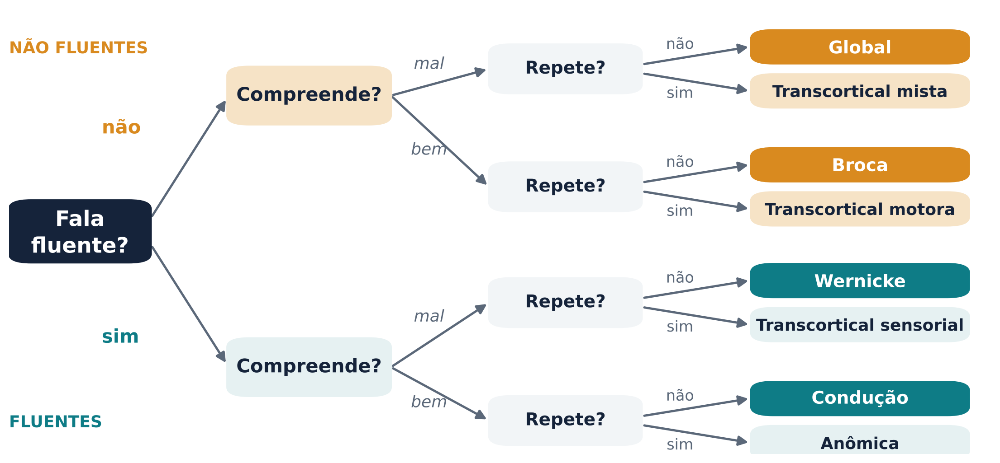
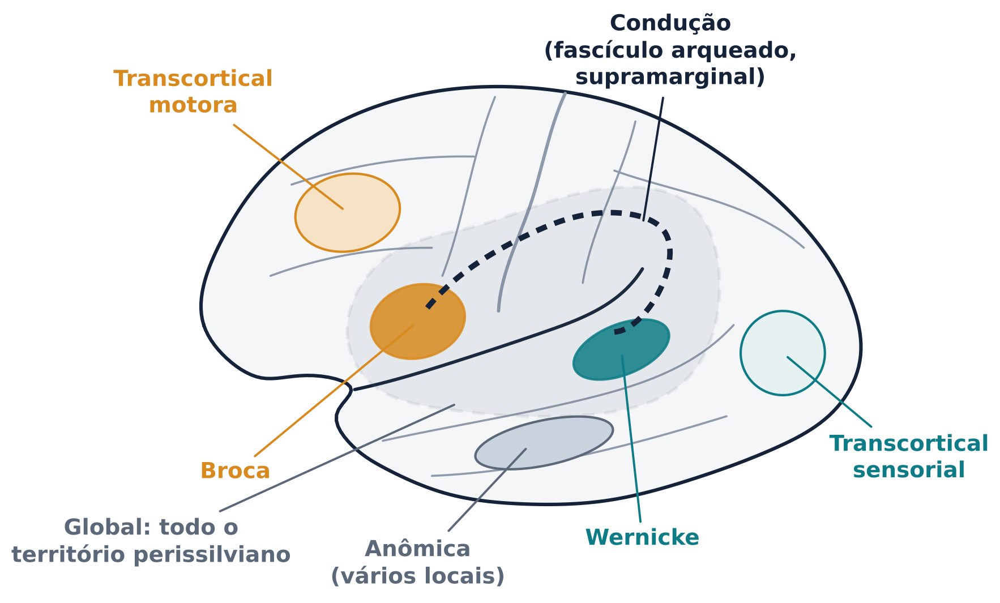
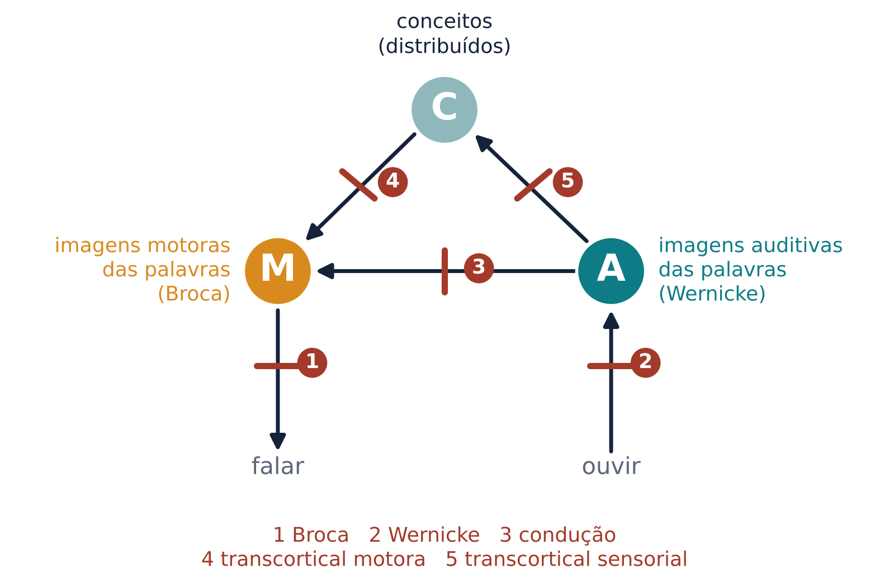
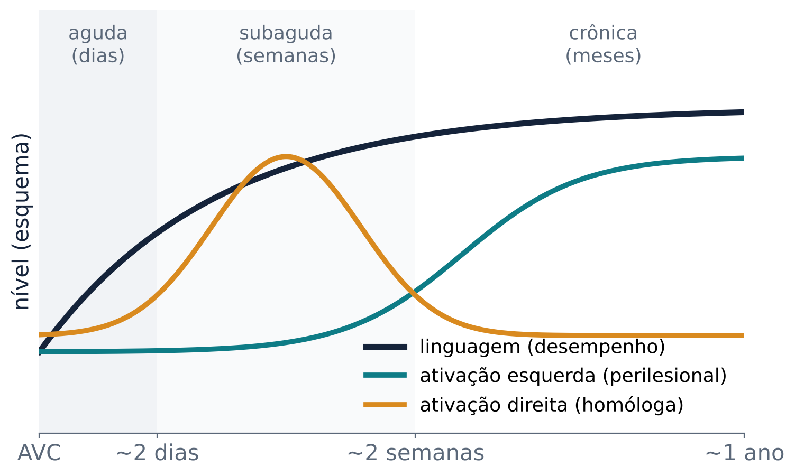
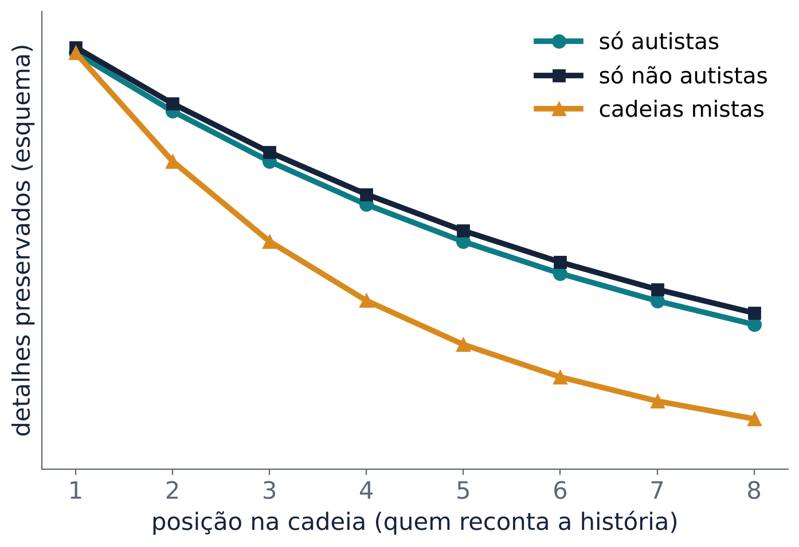
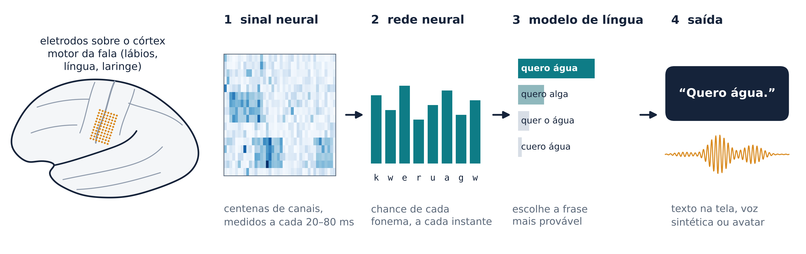

Afasias depois de um AVC, a linguagem que se desfaz aos poucos, diferenças que surgem no desenvolvimento e as neuropróteses que devolvem a voz a quem não consegue mais falar
Nas aulas anteriores estudamos como o cérebro ouve, fala, lê e entende. Hoje olhamos para o que acontece quando esse sistema falha. Antes, um combinado: falamos de pessoas, não de casos. Dizemos “pessoa com afasia”, e não “o afásico”. Alguém na turma pode ter um avô que teve um AVC ou ser uma pessoa autista.
Afasia é uma alteração da linguagem adquirida depois de uma lesão cerebral. Ela atinge a fala, a compreensão, a leitura e a escrita, em graus diferentes (Brady et al., 2016; Tippett; Hillis, 2016). A causa mais comum é o acidente vascular cerebral (AVC), o “derrame”: um vaso entope ou se rompe e uma parte do cérebro fica sem sangue. Dos AVCs novos, algo entre 25% e 50% se apresentam com alguma forma de afasia (Schlaug, 2016).
Afasia não é a mesma coisa que um problema na execução dos movimentos da fala. Na disartria, a fraqueza ou a falta de coordenação dos músculos deixa a fala arrastada, mas a língua (as palavras e a gramática) está intacta. Na afasia, o problema está na própria língua: achar a palavra, montar a frase, entender o que o outro disse.
A história começa em Paris. Em 1861, o médico Paul Broca examinou Louis Victor Leborgne, um homem que só conseguia produzir a sílaba “tan”, muitas vezes acompanhada de gestos. Na autópsia, Broca encontrou uma lesão na parte posterior do giro frontal inferior esquerdo (Small; Hickok, 2016), região que passou a se chamar área de Broca (Tippett; Hillis, 2016). Em 1874, Carl Wernicke descreveu o padrão oposto: fala fluente e bem articulada, mas sem sentido, com lesões na parte posterior do lobo temporal esquerdo (Tippett; Hillis, 2016; Gorno-Tempini; Pressman, 2016). O achado mais confiável dessa época foi que a maioria das pessoas com afasia tinha lesão no hemisfério esquerdo (Tippett; Hillis, 2016).
Perder a linguagem não é perder o pensamento. Pessoas com afasia global, que quase não entendem nem produzem linguagem, ainda somam e subtraem, resolvem problemas de lógica, pensam sobre o que outra pessoa está pensando, apreciam música e se orientam no espaço (Fedorenko; Varley, 2016). Por isso não se fala com uma pessoa com afasia como se fala com uma criança: fale devagar, com frases curtas, e dê tempo para ela responder.
Na clínica, as afasias “clássicas” são classificadas pelo comportamento, com três perguntas simples (figura 1). A fala é fluente? Fala fluente sai sem esforço, com frases de tamanho normal e melodia natural. A pessoa compreende o que ouve? Consegue repetir uma frase dita pelo examinador?

Na afasia de Broca, a fala é não fluente, lenta e esforçada. A pessoa usa sobretudo palavras de conteúdo, como substantivos e verbos, e omite ou troca as palavras gramaticais (artigos, preposições, verbos auxiliares) e as terminações de plural e de tempo verbal. Esse padrão se chama agramatismo: a fala fica “telegráfica” (Tippett; Hillis, 2016). Substantivos costumam ser mais fáceis do que verbos. A compreensão é relativamente boa na conversa, mas falha em frases com sintaxe complexa, como “As flores que o João deu à Maria eram rosas” (Tippett; Hillis, 2016). A repetição é lenta e difícil. Como a lesão costuma alcançar o córtex motor vizinho, é frequente a fraqueza do braço e da face do lado direito (Tippett; Hillis, 2016).
Na afasia de Wernicke, a fala é fluente e tem melodia normal, mas pouco sentido. Aparecem parafasias: trocas de sons (“sanobete” por “sabonete”, uma parafasia fonológica), trocas de palavras (“faca” por “garfo”, uma parafasia semântica) e palavras inexistentes, os neologismos. Quando os neologismos dominam, a fala vira um jargão (Tippett; Hillis, 2016; Blumstein, 2016). A compreensão é ruim já no nível das palavras isoladas, e a repetição também. Uma diferença marcante: ao contrário da pessoa com afasia de Broca, que percebe os próprios erros e muitas vezes se frustra, a pessoa com afasia de Wernicke em geral não tem consciência deles (Tippett; Hillis, 2016).
As outras síndromes completam o quadro:
A classificação é útil, mas descreve sintomas, não explica mecanismos. Os sintomas de uma síndrome aparecem juntos porque dependem de regiões irrigadas pela mesma artéria, e não porque tenham uma causa comum. Por isso eles se separam em pessoas diferentes (Tippett; Hillis, 2016). Até a “fluência”, que parece óbvia, é difícil de julgar: fonoaudiólogos experientes concordaram pouco entre si ao classificá-la (Tippett; Hillis, 2016).
Cada síndrome tem um território típico de lesão (figura 2). A afasia de Broca se associa a lesões frontais posteriores irrigadas pelo ramo superior da artéria cerebral média esquerda. A de Wernicke, a lesões na parte posterior do giro temporal superior (a área de Wernicke), muitas vezes estendidas ao lobo parietal inferior, no território do ramo inferior da mesma artéria. A global aparece quando a artéria é bloqueada antes de se dividir, e as áreas de Broca e de Wernicke são atingidas juntas (Tippett; Hillis, 2016).

A afasia de condução foi atribuída por muito tempo a uma lesão do fascículo arqueado, o feixe de fibras que liga as regiões temporais às frontais. Hoje se sabe que lesões só corticais, no giro supramarginal ou no temporal superior, também a produzem, e que lesões do fascículo nem sempre a causam (Tippett; Hillis, 2016). A anômica é a menos localizável na fase crônica, porque a anomia é o ponto de chegada comum da recuperação de várias afasias. As transcorticais poupam o “anel” perissilviano: a motora fica à frente ou acima da área de Broca, e a sensorial em volta da área de Wernicke, muitas vezes em zonas de fronteira entre artérias (Tippett; Hillis, 2016).
Esses padrões inspiraram os primeiros diagramas da linguagem no cérebro, como o de Ludwig Lichtheim, de 1885 (Small; Hickok, 2016), redesenhado na figura 3. O modelo tinha três partes ligadas entre si: a área de Wernicke, que guardaria a forma sonora das palavras; a área de Broca, com os programas para planejar e executar a fala; e uma região onde ficariam os conceitos. A lógica era localizacionista: uma lesão num centro ou numa ligação produziria um padrão específico de déficits (Mildner, 2008). No século 20, Norman Geschwind retomou e adaptou esse modelo (Tippett; Hillis, 2016).

O modelo clássico acerta o espírito, mas erra os detalhes:
Os modelos atuais falam em redes e em duas vias. Uma via ventral, no lobo temporal, liga o som ao significado e sustenta a compreensão. Uma via dorsal, que passa pela junção entre os lobos temporal e parietal até o lobo frontal, liga o som à articulação e sustenta a repetição e a produção (Hickok; Poeppel, 2007). As síndromes clássicas cabem nesse esquema: a afasia de Broca envolve a via dorsal e sua rede articulatória; a de Wernicke, a interface entre som e significado da via ventral; e a de condução, a ligação entre o sistema auditivo e o motor na via dorsal (Tippett; Hillis, 2016). Você já viu essas duas vias nas aulas 3 e 5.
Depois de um AVC, a linguagem costuma melhorar, e o cérebro muda junto. Dorothee Saur e colegas (2006) fizeram ressonância funcional em 14 pessoas com afasia em três momentos: na fase aguda (em média 1,8 dia após o AVC), na subaguda (cerca de 12 dias) e na crônica (cerca de 321 dias). Na fase aguda, as áreas esquerdas não lesionadas ativavam pouco. Na subaguda, a ativação aumentou nos dois hemisférios, com pico na região do hemisfério direito equivalente à área de Broca e na área motora suplementar, e esse aumento acompanhou a melhora da linguagem. Na fase crônica, a ativação voltou a se concentrar nas áreas esquerdas, com nova melhora (Saur et al., 2006). A figura 4 resume esse curso em três fases.

O papel do hemisfério direito ainda é debatido. Alguns estudos associam melhores resultados ao recrutamento de áreas esquerdas próximas da lesão e piores ao recrutamento do hemisfério direito; outros encontram o contrário (Fridriksson; Smith, 2016). Uma síntese possível é que o hemisfério direito ajuda logo depois do tratamento, mas que as áreas esquerdas perilesionais sustentam os ganhos duradouros (Fridriksson; Smith, 2016).
A terapia fonoaudiológica funciona. Uma revisão sistemática Cochrane reuniu 57 ensaios clínicos e encontrou benefício na comunicação funcional, isto é, na capacidade de se comunicar no dia a dia. Terapias de alta intensidade trouxeram mais ganho, mas também mais desistências (Brady et al., 2016). Duas terapias se apoiam diretamente em ideias da neurociência.
A terapia de entonação melódica nasceu da observação de que pessoas com afasia não fluente grave às vezes cantam palavras que não conseguem falar. A pessoa entoa frases curtas em duas notas, devagar (cerca de uma sílaba por segundo), batendo a mão esquerda a cada sílaba, primeiro em coro com o terapeuta, depois sozinha. O primeiro relato, em 1973, foi com três pessoas com afasia de Broca crônica (Schlaug, 2016). A ideia é recrutar redes do hemisfério direito ligadas ao canto e ao ritmo; a batida da mão esquerda pode acionar uma rede sensório-motora direita que funciona como um “marca-passo” para a fala (Schlaug, 2016). O programa é intensivo: até uma hora e meia por dia, cinco dias por semana, durante vários meses (Schlaug, 2016). Num estudo, depois de 75 sessões, o fascículo arqueado direito aumentou de volume e de número de fibras (Fridriksson; Smith, 2016). Ainda não se sabe quanto do efeito vem da melodia e quanto vem do ritmo da batida, e outros elementos do método, como a própria intensidade, podem ser igualmente importantes (Schlaug, 2016).
A terapia de linguagem induzida por restrição adapta uma terapia criada para o braço paralisado: em vez de amarrar o braço bom, a “restrição” é pedir que a pessoa se comunique falando, sem apontar ou fazer gestos. Em um jogo de cartas, os participantes, separados por uma barreira, pedem cartas uns aos outros (Pulvermüller; Mohr; Taub, 2016). Em um ensaio controlado com pessoas com afasia crônica, a terapia intensiva concentrada em cerca de duas semanas trouxe melhoras claras, e a mesma quantidade de terapia espalhada por um período mais longo funcionou menos (Pulvermüller et al., 2001; Pulvermüller; Mohr; Taub, 2016). O resultado derrubou a ideia de que não vale a pena tratar a afasia crônica. Mas, de novo, há discussão: um ensaio com pessoas na fase subaguda, com a terapia aplicada numa intensidade um pouco menor, encontrou melhoras parecidas com as de outra abordagem, e os autores sugeriram que a intensidade é um fator importante. Resta saber quanto do efeito vem da restrição e quanto vem da intensidade (Pulvermüller; Mohr; Taub, 2016).
No AVC, a afasia aparece de repente e tende a melhorar. Na afasia progressiva primária (APP), a linguagem piora devagar, por causa de uma doença neurodegenerativa. Ela é “primária” porque a linguagem é o sintoma mais importante no início e por cerca de dois anos, enquanto a memória do dia a dia e o comportamento ficam relativamente preservados (Gorno-Tempini; Pressman, 2016). Um consenso internacional definiu três variantes (Gorno-Tempini et al., 2011):
A APP ensinou algo que as lesões vasculares escondiam. O lobo temporal anterior raramente é lesionado sozinho por um AVC; foi a variante semântica que mostrou seu papel no significado (Gorno-Tempini; Pressman, 2016). E, como a perda de neurônios é lenta, o cérebro tem tempo de se reorganizar parcialmente, por isso os sintomas da APP não são cópias das síndromes vasculares (Gorno-Tempini; Pressman, 2016).
Até aqui falamos de linguagem perdida depois de adquirida. Agora, de diferenças que aparecem enquanto a linguagem se desenvolve.
O autismo é uma condição do neurodesenvolvimento. Os critérios diagnósticos atuais da psiquiatria americana (DSM-5, de 2013) tratam de aspectos da comunicação social, como contato visual, expressões faciais e gestos, mas não mencionam o desenvolvimento da linguagem em si. Quando o autismo entrou no manual, em 1980, um grande atraso de linguagem era obrigatório para o diagnóstico (Gernsbacher; Morson; Grace, 2016).
O que mais chama a atenção é a variabilidade. O atraso de linguagem é comum no autismo, mas não universal, e não é exclusivo dele. Numa amostra de crianças e adolescentes autistas, metade teve resultado na média num teste de vocabulário, um quarto ficou de um a dois desvios-padrão abaixo da média e outro quarto, mais de dois desvios-padrão acima (Gernsbacher; Morson; Grace, 2016). Em um grupo de 35 crianças autistas que tinham menos de 60 palavras no início do estudo, algumas chegaram a quase 700 palavras em dois anos, e outras quase não mudaram (Gernsbacher; Morson; Grace, 2016). Em geral, quando a linguagem atrasa, ela segue a mesma ordem do desenvolvimento típico. Traços considerados “típicos” do autismo, como a ecolalia (repetir frases ouvidas) ou trocar “eu” por “você”, não são universais nem exclusivos dele (Gernsbacher; Morson; Grace, 2016).
Como falar sobre isso? Numa pesquisa com 3.470 pessoas da comunidade autista do Reino Unido, o termo “autista” foi aceito por grande parte dos adultos autistas e das famílias, mas por bem menos profissionais; “pessoa com autismo” foi aceito por quase metade dos profissionais, mas por menos adultos autistas. Não houve um termo preferido por todos (Kenny et al., 2016). A regra prática é perguntar e respeitar a preferência de cada pessoa.
Durante muito tempo, as dificuldades de comunicação foram vistas como um déficit só da pessoa autista. O problema da dupla empatia propõe outra leitura: a dificuldade é mútua e surge do encontro entre pessoas com modos diferentes de perceber e se comunicar (Milton, 2012; Crompton et al., 2020). Catherine Crompton e colegas (2020) testaram a ideia com “telefone sem fio”: uma história era recontada ao longo de cadeias de oito pessoas, num total de 72 adultos. Cadeias só de autistas preservaram os detalhes tão bem quanto cadeias só de não autistas; as cadeias mistas perderam detalhes mais depressa e relataram menos afinidade (rapport) (figura 5). Esse resultado questiona a ideia de que pessoas autistas não têm habilidades para interagir (Crompton et al., 2020).

O transtorno do desenvolvimento da linguagem (TDL) é uma dificuldade persistente de linguagem sem causa biomédica conhecida, como surdez, deficiência intelectual ou síndrome genética. O nome foi recomendado por um consenso internacional de especialistas em 2017, no lugar de termos antigos como “distúrbio específico de linguagem” (Bishop et al., 2017). Esse consenso também afirma que o TDL pode coexistir com outras condições do neurodesenvolvimento e que não é preciso haver diferença entre a inteligência verbal e a não verbal para o diagnóstico (Bishop et al., 2017).
O TDL é comum. Nos Estados Unidos, um estudo com mais de 7 mil crianças estimou a prevalência em 7,4% aos 5 anos (Tomblin et al., 1997). Um estudo populacional mais recente estimou em 7,58% a prevalência de transtorno de linguagem de causa desconhecida; segundo os autores, cerca de duas crianças em cada sala de 30 têm um transtorno de linguagem grave a ponto de atrapalhar o aprendizado escolar (Norbury et al., 2016). Mesmo assim, é muito menos conhecido que o autismo.
As crianças com TDL aprendem palavras e gramática mais devagar e costumam ter dificuldades fora da linguagem: velocidade de processamento, memória de trabalho fonológica, processamento auditivo e aprendizagem de sequências (Evans; Brown, 2016). Na neuroimagem não há uma lesão visível. O que aparece, em média, são diferenças de estrutura em algumas regiões, mas não em outras (por exemplo, menos substância cinzenta no núcleo caudado), e uma lateralização atípica da atividade, menos concentrada no hemisfério esquerdo (Evans; Brown, 2016). A causa do TDL continua desconhecida (Evans; Brown, 2016). Um gene costuma aparecer nessa discussão: o FOXP2, descoberto numa família de três gerações (a “família KE”). Mas suas mutações explicam uma forma rara, de um único gene, de apraxia da fala na infância, um distúrbio do planejamento motor da fala; para o TDL, nenhuma mutação de um único gene foi confirmada (Morgan, 2019).
Há pessoas em quem a linguagem está intacta, mas a saída motora não funciona. Na esclerose lateral amiotrófica (ELA), os neurônios motores morrem aos poucos; certos AVCs no tronco cerebral deixam a pessoa consciente, mas incapaz de mover a boca. Essa incapacidade de articular se chama anartria. Para essas pessoas, uma neuroprótese de fala (ou interface cérebro-computador de fala) tenta ler no cérebro a fala que a pessoa tenta produzir.
O alvo é a parte ventral (inferior) do córtex sensório-motor, onde fica um mapa dos articuladores da fala, como lábios, língua e laringe (Bianchi; Simonyan, 2019). Quando a pessoa tenta falar, mesmo sem produzir som, esse mapa se ativa. O sistema tem quatro etapas (figura 6): eletrodos registram a atividade; uma rede neural artificial, treinada com muitas frases tentadas, traduz o sinal em sons da fala (fonemas); um modelo de linguagem escolhe a frase mais provável; e o resultado sai como texto, voz sintetizada ou avatar (Moses et al., 2021; Willett et al., 2023; Metzger et al., 2023).

Em 2021, um grupo implantou uma grade de eletrodos sobre o córtex sensório-motor da fala de uma pessoa com anartria por AVC de tronco cerebral. Com um vocabulário de 50 palavras, o sistema decodificou frases a 15,2 palavras por minuto, com 25,6% de palavras erradas (Moses et al., 2021). Em 2023, dois estudos deram um salto:
Dois limites importam. Primeiro, são poucas pessoas, sistemas experimentais, com cirurgia e treino. Segundo, a neuroprótese contorna uma saída quebrada; ela não substitui uma rede de linguagem lesionada. Por isso ela funciona em quem tem ELA ou anartria, e não, hoje, em quem tem afasia.
E a fala que dizemos “na cabeça”? Erin Kunz e colegas (2025) registraram o córtex motor de quatro participantes e mostraram que a fala interior está bem representada ali. O padrão é muito parecido com o da fala tentada, embora uma dimensão do sinal (“intenção motora”) separe as duas. Frases imaginadas foram decodificadas em tempo real; num vocabulário de 125 mil palavras, a taxa de erro variou de 26% a 54%, conforme o participante. Mais delicado: alguns aspectos de fala interior não solicitada, como números contados em silêncio, também puderam ser decodificados. Os autores testaram salvaguardas, como só “destravar” o decodificador depois que a pessoa imagina uma palavra-senha (Kunz et al., 2025).
As neuropróteses não leem pensamentos em geral: leem padrões motores de fala, tentada ou imaginada. Mas, como a fala interior deixa rastros no córtex motor, surgem perguntas novas. Quem controla quando o aparelho decodifica? A quem pertencem os dados cerebrais? Quem responde por um erro de decodificação? É a pergunta para casa desta aula.
Experimento 1 · Estudos de caso. Em grupo, vocês leram sete casos fictícios e usaram as três perguntas da figura 1 para escolher a síndrome e tocar no local da lesão. Espera-se que Broca, Wernicke e global sejam os mais fáceis. As confusões típicas são condução versus Wernicke (as duas têm parafasias; a compreensão decide) e as transcorticais, quando o grupo não presta atenção à repetição preservada. Na localização, anômica e global confundem mais, como esperado, porque a anômica é a menos localizável (Tippett; Hillis, 2016). Lembre que os casos eram idealizados: na clínica, a mesma lesão pode dar quadros diferentes.
Experimento 2 · Na ponta da língua. Para nomes pouco usados (dedal, metrônomo, estetoscópio), é comum ficar com a palavra “na ponta da língua”. Nesse estado, a pessoa sabe o que o objeto é e às vezes até a primeira letra e o número de sílabas, mas os sons não chegam (Brown; McNeill, 1966; Blumstein, 2016). Por isso se espera que a pista de som (as primeiras sílabas) resolva mais do que a de significado: o conceito já estava ativo, faltava a forma sonora. Pessoas com afasia também melhoram a nomeação com pistas fonológicas ou semânticas, sinal de que a palavra não foi perdida, mas ficou difícil de acessar (Blumstein, 2016). Uma ressalva de método: no experimento, a pista de som vinha sempre depois da de significado e dava mais informação.
Experimento 3 · Siga as instruções. A tarefa imitava o Token Test, criado como um teste sensível para detectar distúrbios de compreensão na afasia (De Renzi; Vignolo, 1962). Os níveis iniciais quase não têm erro. Os primeiros erros costumam aparecer quando a instrução fica longa (memória de trabalho) ou quando a ordem das palavras não coincide com a ordem dos atos (“antes de tocar no A, toque no B”). Compreender não é uma coisa só: depende de reconhecer palavras, guardá-las na memória e analisar a sintaxe. É a mesma lógica da dificuldade de pessoas com afasia de Broca com frases complexas (Tippett; Hillis, 2016) e da memória fonológica afetada na variante logopênica (Gorno-Tempini; Pressman, 2016).
Experimento 4 · Decodificador de fala. A simulação era simplificada: cada letra fazia o papel de um fonema, com um padrão de atividade mais ruído. Ler cada som isoladamente quase nunca acerta a palavra; restringir a palavras reais ajuda; um vocabulário grande traz mais vizinhos parecidos e o erro sobe; e o modelo de linguagem reduz muito o erro porque usa o contexto, como fazemos ao ouvir alguém num lugar barulhento. Mais eletrodos também ajudam. É a mesma receita das neuropróteses reais, que combinam um decodificador de fonemas com um modelo de linguagem (Willett et al., 2023; Metzger et al., 2023). Os números da turma variam de rodada para rodada; o que importa é a direção dos efeitos.
Uma pessoa com afasia global não consegue entender nem produzir frases. Por que isso não significa que ela perdeu a capacidade de pensar?
Resposta
Porque linguagem e pensamento dependem de redes diferentes. Pessoas com afasia global ainda fazem contas, resolvem problemas de lógica, raciocinam sobre o que outra pessoa pensa e se orientam no espaço. O que falta é o acesso à língua, não o raciocínio.
Dois pacientes têm fala fluente com parafasias. O que você perguntaria para decidir entre afasia de Wernicke e afasia de condução?
Resposta
Se a pessoa compreende. Na afasia de condução a compreensão é boa e o problema principal é repetir; na de Wernicke a compreensão é ruim. A consciência dos erros também ajuda: a pessoa com afasia de condução tenta se corrigir; a com Wernicke em geral não percebe os erros.
Por que a repetição preservada indica que a lesão está fora do território perissilviano?
Resposta
Repetir exige levar o som ouvido até a articulação, pela via dorsal que passa pelo território perissilviano. Se a pessoa repete bem, essa via está funcionando, e a lesão deve estar fora dela, desconectando-a dos conceitos ou do planejamento da fala, como nas afasias transcorticais.
O caso de Leborgne é usado como prova de que a área de Broca é “a área da fala”. O que os estudos posteriores mostraram?
Resposta
A ressonância do cérebro preservado de Leborgne mostrou lesões que iam além da superfície, até estruturas profundas e substância branca. E lesões restritas à área de Broca causam só parte dos sintomas. A síndrome depende de uma lesão mais ampla, numa rede, e não de um único “centro”.
No estudo de Saur e colegas, a ativação do hemisfério direito subiu nas primeiras semanas e depois caiu, enquanto a linguagem continuava melhorando. Que interpretação isso sugere?
Resposta
Que a recuperação tem fases: o hemisfério direito parece ajudar na fase subaguda, e os ganhos duradouros dependem da volta da atividade às áreas esquerdas próximas da lesão. O papel exato do hemisfério direito ainda é debatido.
Em que a afasia progressiva primária difere da afasia por AVC, e o que a variante semântica revelou sobre o cérebro?
Resposta
A APP começa devagar e piora com o tempo, por doença neurodegenerativa; a afasia por AVC aparece de repente e tende a melhorar. A variante semântica mostrou que o lobo temporal anterior é essencial para o significado de palavras e objetos, algo que os AVCs raramente revelam, porque essa região quase nunca é lesionada sozinha.
Como o experimento de Crompton e colegas muda a ideia de que as pessoas autistas “têm um déficit de comunicação”?
Resposta
Cadeias só de autistas transmitiram a história tão bem quanto cadeias só de não autistas; o que piorou foram as cadeias mistas. Isso sugere que parte da dificuldade está no encontro entre modos diferentes de se comunicar, como propõe a dupla empatia, e não em uma falha de um lado só.
Por que uma neuroprótese de fala ajuda uma pessoa com ELA, mas hoje não ajudaria uma pessoa com afasia de Broca?
Resposta
A neuroprótese lê a fala tentada no córtex motor e contorna músculos que não funcionam. Na ELA a linguagem está intacta e só a saída falha. Na afasia de Broca a lesão atinge a própria rede da linguagem; não há um plano de frase intacto para ser lido.
BIANCHI, S.; SIMONYAN, K. The speech-ready organization of the motor cortex. In: HAGOORT, P. (org.). Human language: from genes and brains to behavior. Cambridge, MA: The MIT Press, 2019. p. 499-508.
BISHOP, D. V. M. et al. Phase 2 of CATALISE: a multinational and multidisciplinary Delphi consensus study of problems with language development: terminology. Journal of Child Psychology and Psychiatry, v. 58, n. 10, p. 1068-1080, 2017. DOI: https://doi.org/10.1111/jcpp.12721.
BLUMSTEIN, S. E. Psycholinguistic approaches to the study of syndromes and symptoms of aphasia. In: HICKOK, G.; SMALL, S. L. (org.). Neurobiology of language. London: Academic Press, 2016. p. 923-933. DOI: https://doi.org/10.1016/B978-0-12-407794-2.00074-2.
BRADY, M. C. et al. Speech and language therapy for aphasia following stroke. Cochrane Database of Systematic Reviews, n. 6, CD000425, 2016. DOI: https://doi.org/10.1002/14651858.CD000425.pub4.
BROWN, R.; McNEILL, D. The “tip of the tongue” phenomenon. Journal of Verbal Learning and Verbal Behavior, v. 5, n. 4, p. 325-337, 1966. DOI: https://doi.org/10.1016/S0022-5371(66)80040-3.
CROMPTON, C. J. et al. Autistic peer-to-peer information transfer is highly effective. Autism, v. 24, n. 7, p. 1704-1712, 2020. DOI: https://doi.org/10.1177/1362361320919286.
DE RENZI, E.; VIGNOLO, L. A. The Token Test: a sensitive test to detect receptive disturbances in aphasics. Brain, v. 85, n. 4, p. 665-678, 1962. DOI: https://doi.org/10.1093/brain/85.4.665.
DRONKERS, N. F. et al. Paul Broca’s historic cases: high resolution MR imaging of the brains of Leborgne and Lelong. Brain, v. 130, n. 5, p. 1432-1441, 2007. DOI: https://doi.org/10.1093/brain/awm042.
EVANS, J. L.; BROWN, T. T. Specific language impairment. In: HICKOK, G.; SMALL, S. L. (org.). Neurobiology of language. London: Academic Press, 2016. p. 899-912. DOI: https://doi.org/10.1016/B978-0-12-407794-2.00072-9.
FEDORENKO, E.; VARLEY, R. Language and thought are not the same thing: evidence from neuroimaging and neurological patients. Annals of the New York Academy of Sciences, v. 1369, n. 1, p. 132-153, 2016. DOI: https://doi.org/10.1111/nyas.13046.
FRIDRIKSSON, J.; SMITH, K. Neuroplasticity associated with treated aphasia recovery. In: HICKOK, G.; SMALL, S. L. (org.). Neurobiology of language. London: Academic Press, 2016. p. 1007-1013. DOI: https://doi.org/10.1016/B978-0-12-407794-2.00080-8.
GERNSBACHER, M. A.; MORSON, E. M.; GRACE, E. J. Language development in autism. In: HICKOK, G.; SMALL, S. L. (org.). Neurobiology of language. London: Academic Press, 2016. p. 879-886. DOI: https://doi.org/10.1016/B978-0-12-407794-2.00070-5.
GORNO-TEMPINI, M. L. et al. Classification of primary progressive aphasia and its variants. Neurology, v. 76, n. 11, p. 1006-1014, 2011. DOI: https://doi.org/10.1212/WNL.0b013e31821103e6.
GORNO-TEMPINI, M. L.; PRESSMAN, P. Introduction to primary progressive aphasia. In: HICKOK, G.; SMALL, S. L. (org.). Neurobiology of language. London: Academic Press, 2016. p. 935-952. DOI: https://doi.org/10.1016/B978-0-12-407794-2.00075-4.
HICKOK, G.; POEPPEL, D. The cortical organization of speech processing. Nature Reviews Neuroscience, v. 8, n. 5, p. 393-402, 2007. DOI: https://doi.org/10.1038/nrn2113.
KENNY, L. et al. Which terms should be used to describe autism? Perspectives from the UK autism community. Autism, v. 20, n. 4, p. 442-462, 2016. DOI: https://doi.org/10.1177/1362361315588200.
KUNZ, E. M. et al. Inner speech in motor cortex and implications for speech neuroprostheses. Cell, v. 188, n. 17, p. 4658-4673.e17, 2025. DOI: https://doi.org/10.1016/j.cell.2025.06.015.
METZGER, S. L. et al. A high-performance neuroprosthesis for speech decoding and avatar control. Nature, v. 620, n. 7976, p. 1037-1046, 2023. DOI: https://doi.org/10.1038/s41586-023-06443-4.
MILDNER, V. The cognitive neuroscience of human communication. New York: Lawrence Erlbaum Associates, 2008.
MILTON, D. E. M. On the ontological status of autism: the ‘double empathy problem’. Disability & Society, v. 27, n. 6, p. 883-887, 2012. DOI: https://doi.org/10.1080/09687599.2012.710008.
MOHR, J. P. et al. Broca aphasia: pathologic and clinical. Neurology, v. 28, n. 4, p. 311-324, 1978. DOI: https://doi.org/10.1212/WNL.28.4.311.
MORGAN, A. Deciphering genetics of speech-motor disorders. In: HAGOORT, P. (org.). Human language: from genes and brains to behavior. Cambridge, MA: The MIT Press, 2019. p. 557-575.
MOSES, D. A. et al. Neuroprosthesis for decoding speech in a paralyzed person with anarthria. New England Journal of Medicine, v. 385, n. 3, p. 217-227, 2021. DOI: https://doi.org/10.1056/NEJMoa2027540.
NORBURY, C. F. et al. The impact of nonverbal ability on prevalence and clinical presentation of language disorder: evidence from a population study. Journal of Child Psychology and Psychiatry, v. 57, n. 11, p. 1247-1257, 2016. DOI: https://doi.org/10.1111/jcpp.12573.
PULVERMÜLLER, F. et al. Constraint-induced therapy of chronic aphasia after stroke. Stroke, v. 32, n. 7, p. 1621-1626, 2001. DOI: https://doi.org/10.1161/01.STR.32.7.1621.
PULVERMÜLLER, F.; MOHR, B.; TAUB, E. Constraint-induced aphasia therapy: a neuroscience-centered translational method. In: HICKOK, G.; SMALL, S. L. (org.). Neurobiology of language. London: Academic Press, 2016. p. 1025-1034. DOI: https://doi.org/10.1016/B978-0-12-407794-2.00082-1.
SAUR, D. et al. Dynamics of language reorganization after stroke. Brain, v. 129, n. 6, p. 1371-1384, 2006. DOI: https://doi.org/10.1093/brain/awl090.
SCHLAUG, G. Melodic intonation therapy. In: HICKOK, G.; SMALL, S. L. (org.). Neurobiology of language. London: Academic Press, 2016. p. 1015-1023. DOI: https://doi.org/10.1016/B978-0-12-407794-2.00081-X.
SMALL, S. L.; HICKOK, G. The neurobiology of language. In: HICKOK, G.; SMALL, S. L. (org.). Neurobiology of language. London: Academic Press, 2016. p. 3-9. DOI: https://doi.org/10.1016/B978-0-12-407794-2.00001-8.
TIPPETT, D. C.; HILLIS, A. E. Vascular aphasia syndromes. In: HICKOK, G.; SMALL, S. L. (org.). Neurobiology of language. London: Academic Press, 2016. p. 913-922. DOI: https://doi.org/10.1016/B978-0-12-407794-2.00073-0.
TOMBLIN, J. B. et al. Prevalence of specific language impairment in kindergarten children. Journal of Speech, Language, and Hearing Research, v. 40, n. 6, p. 1245-1260, 1997. DOI: https://doi.org/10.1044/jslhr.4006.1245.
WILLETT, F. R. et al. A high-performance speech neuroprosthesis. Nature, v. 620, n. 7976, p. 1031-1036, 2023. DOI: https://doi.org/10.1038/s41586-023-06377-x.
Material de estudo da disciplina Bases neurais da comunicação humana (UFRN), Prof. Daniel Y. Takahashi. Texto e figuras elaborados para o curso; as fontes estão nas Referências.